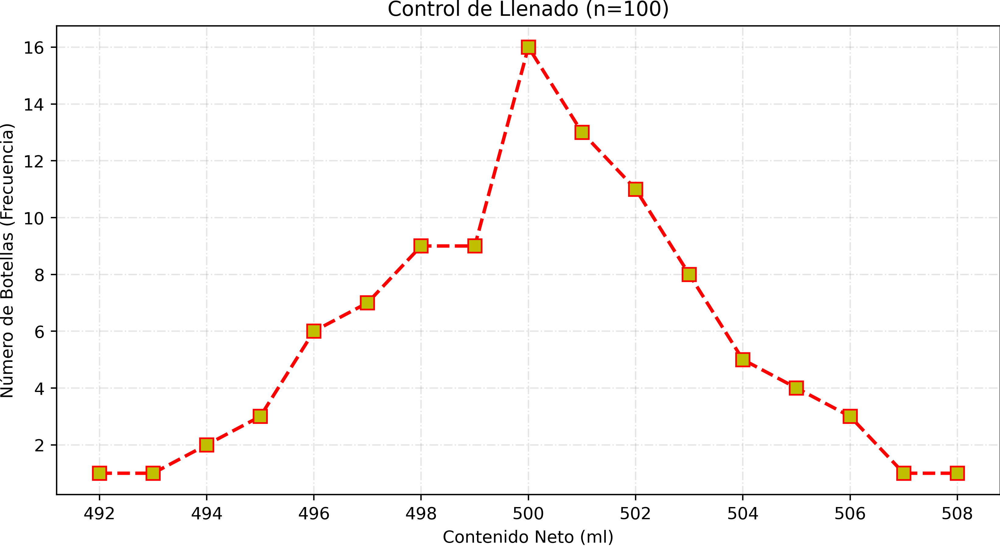

Visualización de Análisis Estadístico
1. Histograma
.png)
2. Polígono de Frecuencias

3. Ojiva (Frec. Acumulada)
.png)
4. Composición Relativa (Pastel)
.png)
5. Gráfico de Barras (Comparativo)
.png)
Se realizó un muestreo aleatorio simple de 100 botellas durante un turno de producción normal. El valor nominal esperado para cada unidad es de 500 ml.
| Clase (ml) | fa | fr | facum |
|---|---|---|---|
| 492 | 1 | 0.01 | 0.01 |
| 493 | 1 | 0.01 | 0.02 |
| 494 | 2 | 0.02 | 0.04 |
| 495 | 3 | 0.03 | 0.07 |
| 496 | 6 | 0.06 | 0.13 |
| 497 | 7 | 0.07 | 0.20 |
| 498 | 9 | 0.09 | 0.29 |
| 499 | 9 | 0.09 | 0.38 |
| 500 | 16 | 0.16 | 0.54 |
| 501 | 13 | 0.13 | 0.67 |
| 502 | 11 | 0.11 | 0.78 |
| 503 | 8 | 0.08 | 0.86 |
| 504 | 5 | 0.05 | 0.91 |
| 505 | 4 | 0.04 | 0.95 |
| 506 | 3 | 0.03 | 0.98 |
| 507 | 1 | 0.01 | 0.99 |
| 508 | 1 | 0.01 | 1.00 |

Estudio realizado a 100 jóvenes universitarios sobre el tiempo promedio diario (en horas) dedicado a redes sociales durante periodos de exámenes.
| Clase | Límite inferior | Límite superior | Marca de Clase | fa | fr | facum |
|---|---|---|---|---|---|---|
| 0 | 1.25 | 1.69 | 1.47 | 8 | 0.08 | 0.08 |
| 1 | 1.69 | 2.12 | 1.91 | 11 | 0.11 | 0.19 |
| 2 | 2.12 | 2.56 | 2.34 | 18 | 0.18 | 0.37 |
| 3 | 2.56 | 3.00 | 2.78 | 14 | 0.14 | 0.51 |
| 4 | 3.00 | 3.44 | 3.22 | 18 | 0.18 | 0.69 |
| 5 | 3.44 | 3.88 | 3.66 | 13 | 0.13 | 0.82 |
| 6 | 3.88 | 4.31 | 4.09 | 12 | 0.12 | 0.94 |
| 7 | 4.31 | 4.75 | 4.53 | 6 | 0.06 | 1.00 |
.png)
.png)
.png)
.png)
.png)
Se encuestó a 100 profesionales del área de tecnología sobre cuál es el navegador web que utilizan como herramienta principal de trabajo. Las respuestas posibles fueron: Chrome, Firefox, Safari, Edge y Brave.
| Clase | fa | fr | facum |
|---|---|---|---|
| Brave | 12 | 0.12 | 0.12 |
| Chrome | 41 | 0.41 | 0.53 |
| Edge | 17 | 0.17 | 0.70 |
| Firefox | 15 | 0.15 | 0.85 |
| Safari | 15 | 0.15 | 1.00 |
.png)
.png)
.png)
.png)
.png)